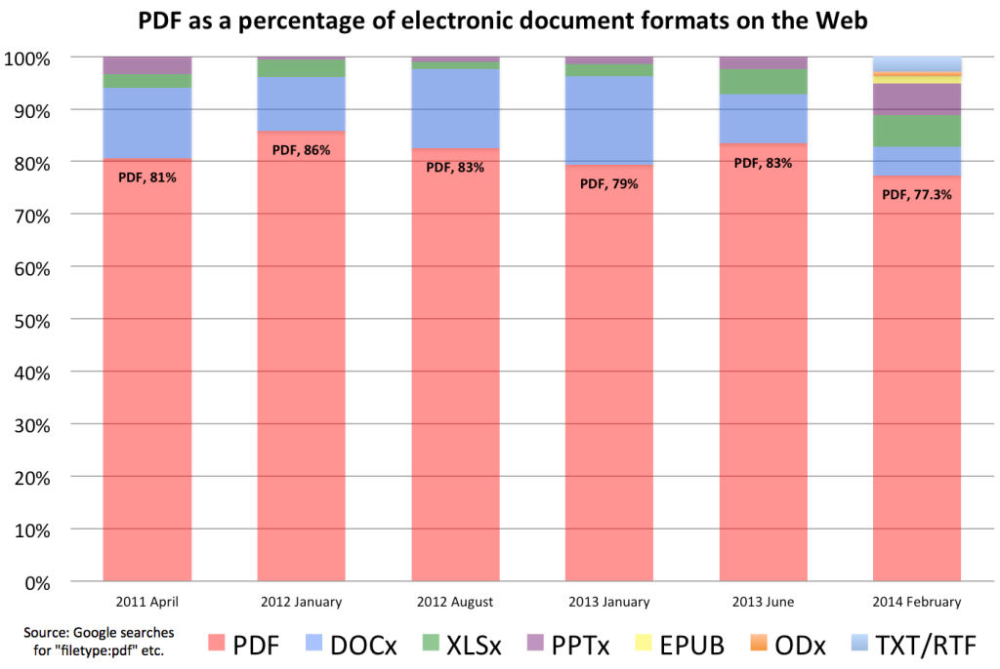
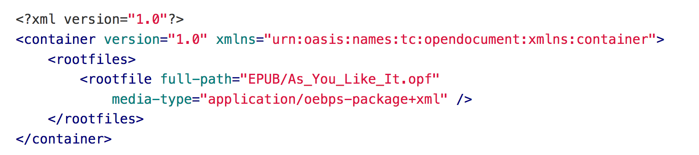
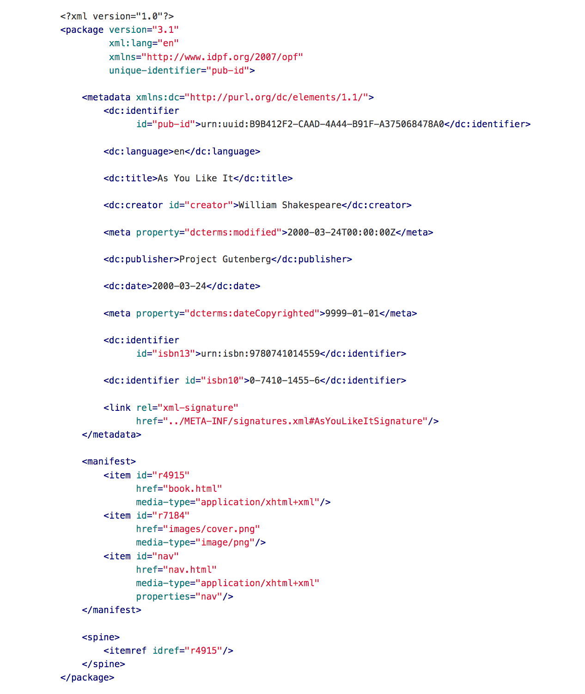
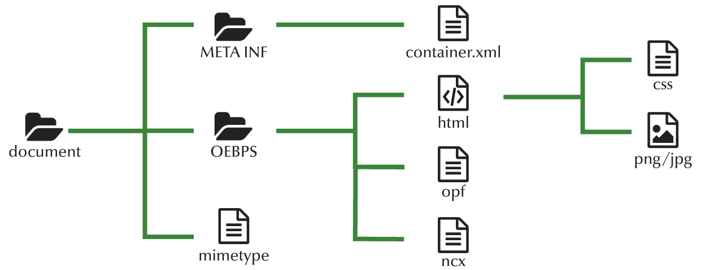
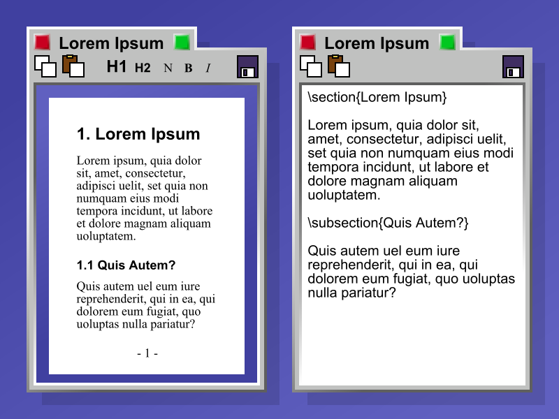
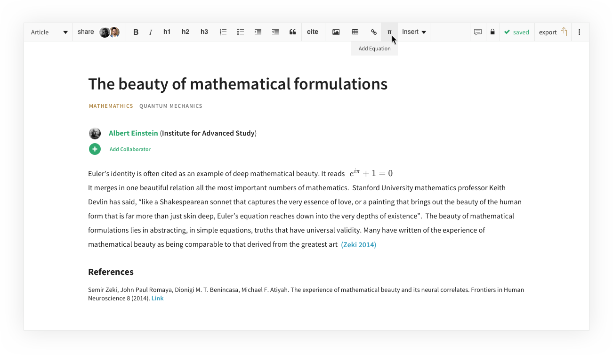
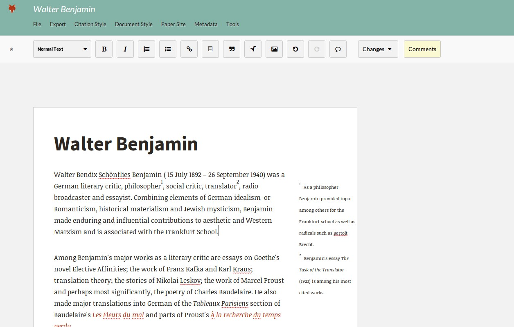
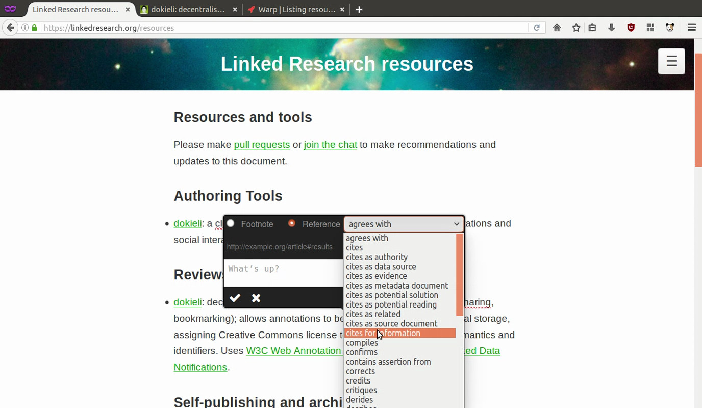
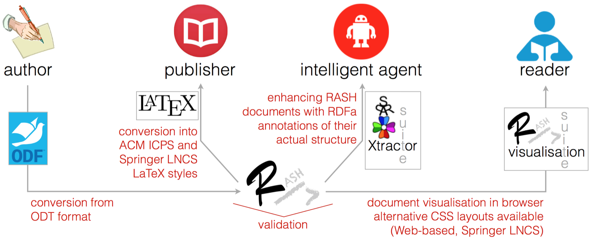
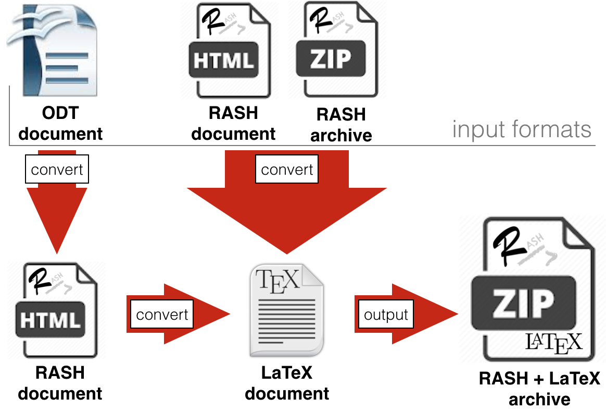

Literature review
Before talking about RAJE I must describe the domain where it operates.
First of all I introduce the submission workflow , for creation, evaluation and publication, and few words about HTML publication. Then I will give an overall about popular editors and formats today, which are mainly PDF and ePub as formats, and the WYSIWYG for what concern the editors. At last I describe the RASH framework, where RAJE will be placed in.
Submission workflow
More than 400 years passed, but the structure which sustain scientific papers is still the same of Galieo Galilei— A. Pepe Authorea
Co-Founder.
This, described below, is the academic submission workflow.
When a researcher, or a group of them, wants to write a paper to a journal, workshop or conference he/her, first of all, needs an editor. If we are talking about a more than one author, they probably set up a communication link among them, to exchange and share the new changes; To have always the last release. The editor can be a WYSIWYG word processor or a markdown one (that will be described in ), and in some case it has a collaboration system directly integrated inside.
When the article is finally ready, it must be submitted to the conference, answering to the call of papers. Before the deadline only the abstract must be sent, and then the whole article. Only one requirement is asked: the article can be accepted only in PDF format, but sometimes, in few specific conferences also HTML is accepted . Not only the file format is required, but also the publisher's layout layout (such as LNCS, ACM and others).
This step can be called evaluation. Here a committee of reviewers and conference chairs have to review all submitted articles. Every article can be accepted or rejected, but sometimes changes are required. When a paper is accepted the second phase comes: publication. Authors, now, have to send an archive containing source code of written paper (e.g. if LaTeX is used, inside the archive can be found .tex markup files) and a the PDF corrispondent document, to the publisher. They will create a new PDF file starting fromthe sent one.
HTML and publication
The main format widely used to submit academic articles is PDF. It usage has many problems (that will belisted after) however the worst one, in this case, is about the difficulty to be read by machines. For this reason the web scientific community propose the adoption of HTML for submitting and sharing scientific articles . In addition to the ability to be easily ridden by machines or browsers, it is not static as PDF, e.g. the HTML format allows reading users to change beetwen the different supported styles only interacting with specific button placed at the bottom of the article.
Enhancements are multiple. Videos, SVG images, user interactions are all things that PDF does not have.
As just said, HTML is currently not used to publication, but instead many reasearchers already use this format because they use web-first editors or web processors which can export the document in HTML format.
Elsevier, that is a world-leading publisher for academic research, has posed a series of questions online to a group of 500 researchers about which one do they prefer beetwen HTML or PDF to create research articles. First they asked few question about pros and cons and then, after a video regarding the article of the future
, they asked if the video changed its perception . The 60% of the interviewed researcherers changed its mind about a HTML based article, instead a few more than a third of them was little sceptical about maintainig costs, offline reading and how much this features arerelevant. At least 50% of interviewed people declared that maybe in future, HTML can be the next way to create, share and navigate the future research articles.
Editors and formats
All the research articles are created with at least one editor or word processor, depending on authors' preferences.
The most used editors are word processors, which are computer programs that allow users to do more actions than common text editors (as WordPad). Them are used to write down those kind of document such as Microsoft Word,OpenOffice and LibreOffice. Thesethree processors create files with their own format: .doc(x). They share the biggest amount of the market. MS Word, which cames with MS Office suit, during his apex was the most used one.
LaTeX i.e. a typesetting system to create technical and scientific documentation, is popular enough to be the most adopted format for drawing scientific documents in a markdown-like way.Of course it comes with many editors (both markup and WYSIWYG styles), which shares more or less equally the market. One of the LaTeX's strenghts are the mathematical notation and the wide number of packages and styles avilable. Mathematical notation is pretty simplier than other editors, because it uses a well defined syntax .
In this chapter I talk about PDF and ePub formats (the most required from publishers), the WYSIWYG editors and, atleast, I will spend some words to describe HTML-based editors.
PDF: de facto standard
The Portable Document Format (also known as PDF) is a format created by Adobe Systems in the first 90s [5]. It was born to facilitate the exchange of documents. It became popular because it is independent of software, hardware, or operating system, and now it is de facto standard. In other words, documents looked always the same everywhere, regardless of which device or Operating System are opened.
After its first release, the new versione PDF 1.1 came out, with more new interesting features such as links, notes and so on. Year over year new releases has been published until, in the 2008, PDF 1.7 became an official ISO-standard (ISO 32000-1:2008).
Everyone use it: businesses, universities and publishers (as written in ). In is shown that from April 2011 to February 2014, the most format searched with Google search engine is PDF. The percentage decreased in 2014, reaching 77 points degree. In the same year the ePub format usage, which was not there in previous years, is grown up.
A PDF file is made up combining three different technologies:
-
A PostScript part to generate layout and graphics.
-
A font-embedding system that aggregate used fonts inside the document.
-
A storage system which embeds all elements (also the two listed above, images and other external things) togheter, in one single file.

PDF files did not succeed because of its technical supremacy, but mostly because Adobe, in 1993, realized that this format has to became free of charges, unlike its competitors . This move is the architect of future popularity.
The accessibility is a problem since PDF format's focus was more characterized by graphical rappresentation than semantical. When, in 2012, a new standard has been released (PDF/UA,Universal Accessibility) PDF files can be created specifically to be accessible for disabled people, with additional informations like XML tags, captions and audio descriptions. The PDF/UA standard is deeply different from the PDF one,this means that a PDF file can or cannot be compatible with the accessible standard. Moreover the only one program that allows users to modify compliance issues on a PDF file is Adobe Acrobat Reader Pro, where its license has a significant cost [6] .
The last problem is that PDF is a static format, good to be read form humans, but (because is shared as binary) is less good to be read from machines.
EPUB format
The EPUB (short for electronic publication) format is a open standard published by the International Digital Publishing Forum. It is a format for e-bookfiles . It can be used to send and publish a single file, while it contains a set of structured assets, including XHTML, CSS, SVG, images, and other resources
.
EPUB is the most widely supported vendor-independent XML-based (as opposed to PDF) e-book format; that is, it issupported by the largest number of hardware readers.
In October 2007 was realeased, with an expansion in 2010, EPUB 2. The version 3.0 became effective in October 2011(it was also re-updated in June 2014 to the version 3.0.1). EPUB 3.0.1 granted specialized formatting (for documentslike graphic novels and comic books), support for MathML, and enhanced accessibility features. From Junuary 5 2017, the current version is EPUB 3.1 and its purpose is to simplify digital books specifications and align itself to the Open Web Platform (also because the alliance beetwen IDPF and W3C dated 2017). Right now, IDPF is developing a new common specifications for allowing users to open publications online,with the help of a simple browser without lose any features.
An EPUB file is ZIP archive containing HTML5 files (with the last release), CSS and other needed assets. As said before, an EPUB is delivered as a single file to facilitate sharing, but it can be unzipped to see his internal structure ( ). Inside the root folder there are two directories and a mimetype that must be included in. The mimetype is only needed to reveal what kind of ZIP is, in this case it only contains application/epub+zip. The META-INF directory must contains the reserved files suchas encryption.xml, signatures.xml and container.xml whichis the main one. It has a rootfile element for each one asset inside the EPUB ( show its contents).

Then there is the OEBPS directory that contains: ncx, opf and other required assets. Among them, OPF integrates all metadata normally required as the unique-identifier or other dublin core metadata (whichare dc:language, dc:creator and others). The manifest node wraps every needed assets, in are the entire book in HTML format, a cover image and the table of content which is nav.html.


An EPUB file, like a web page (which is basically what an EPUB is), is completely responsive. This mean that, istead of the PDF format (which is shown in the same way with any devides), its structure is different beetwen a full width monitor and a smartphone. That is because its core documents are HTML5. This is compatibility is very useful if a publisher has already produced a content in HTML or HTML5 because the conversion to EPUB 3 should be minimal .
This would likely point to HTML5 as the future for online and mobile content formats. EPUB should certainly becounted in that future, since the specification was drawn from existing and emerging web standards, in particular HTML5. [7]
EPUB and PDF formats can be used for the same purposes. But right now PDF still the one most used format (also required by publishers). in the below, I listed pros and cons about the two formats.
| - | EPUB | |
|---|---|---|
| PROS |
|
|
| CONS |
|
|
WYSIWYG and HTML-based editors
WYSIWYG is a kind of editors or word processors that allows developers to see what the end result will look like during the creation of the document interface. In other words users can modify directly the output itself. A WYSIWYG editor can add bold and italic, change text position, use undo and redo, create lists, links, anchors andimages . The first difference that can comes in mind is beetwen a LaTeX processor ( ). In this image leap out that the left editor allows users to edit directly the output interface, instead the right one is simply a code that will be processed after, to compile an interface similar to the left one. The output is the same (more or less) but the input in deeply different. The editor comes with a toolbar, which hasbuttons to insert HTML elements <h1>, <h2> and so on. In the other side LaTeX basics are needed to write markdown instructions.

Popular WYSIWYG editors are MS Word, OpenOffice, LibreOffice (explained above) but also Google Docs and Dropbox Paper. These are word processors, which can give also style and structure to a document, not only text. Everyone has its own document structure, but this typology is largely used to work with HTML. Now I describe what are the most used and interesting, for my case, HTML-based editors.
TinyMCE Is an Open Source library that can integrate a WYSIWYG HTML-based editor inside a website. Is a large project that involve 130 contributors with almost 5000 commits on Github. Among its features there are formatting, table insertion, image editing, customizable themes and it is accesible for users with disabilities because it follows WAI-ARIA specification making it compatible with screen readers such as JAWS and NVDA.
Another strenght is that TinyMCE can be integrated everywhere. Can be found from CDN and package managers (NPM, Bower,NuGet), and integrated with frameworks such as JQuery and Angular.js, or inside common CMS like Wordpress or Joomla. Its community and contributors ar lively on networks, issues and enhancements are fastly fixed.

Authorea is created and developed in 2013 by two reasearcherers A. Pepe and N. Jenkins. They believed to fix collarative problems that went out during the creation of technical, scholarlyand scientific writings. The first problem is the complex workflow to follow due to write a paper (). It is very popular among physicists and astronomers which are the biggest categories of users.
Authorea is an online platform ( ), for that reason a paper is an HTML file, actually an article is a git repository . In fact authors can take advantages of using its versioning system, without any installations, to keep track of every single change displayed in the same screen window of the project. Everyone, which has the right permissions, can undo specific commit and revert to its previous version. Every article in accessible anywhere, from any device connected to the Internet, and any TeX installations are not required. About tables and formulas itis very advanced. Authorea lets anyone write mathematical notations, tables, plots and fgures in each LaTeX and MathML.

Fidus Writer is an open source WYSIWYG collaborative HTML-based word processor made for academics who need to use citations and formulas within papers. All articles can be exported in more ways: website, paper or ebook. In each case the focus is the content, layouts can be choose during publication. FidusWriter supports LaTeX for adding footnotes and citations directly inside the documents.
It is also collaborative in real-time, which means that FidusWriter aims to fix sharing problemsfor many-authors papers , and everyone can automatically see and write the document in the same time.
Its formula system works hand by hand with MathJax, MathType and LaTeX.

Dokieli is a client side editor for decentralised article publishing, annotations and social interactions.
Is strongly based on decentralization, authors can publish wherever they want to. Authors can edit any HTML files just importing Dokieli CSS and JavaScripts.
In this case Dokieli is not a real WYSIWYG word processor, but instead is more a special module that can turn a browser-rendered paper into a in-browser editable, and annotateable, HTML document. It works same way shown in .
Dokieli allows authenticated authors to create in-text annotations and, of course, reply to them with the W3C web annotation specifications. It also implements Linked Data Notifications for notifications about entire or part of articles. Now it grants notifications for annotations, replies, shares, reviews, citations/links, bookmarks and likes.
A big Dokieli's strenght is its full compatibility with HTML5. All HTML5 elements can be attached and inserted with it, and now some new UI features to do that are under development. For that reason the entire view style can be customized with just some CSS lines, or if needed style can be changed directly with Dokieli (e.g. passing fromnative visualization to Springer LNCS view).

RASH
RASH is a Web-first format for writing HTML-based scholarly papers. RASH is acronym for Research Articles in Simplified HTML,and it consists in a subset of 32 HTML elements in . This format is placed inside the RASH framework, i.e. a set of specifications and tools for RASH documents.
RASH, because is HTML, has been designed to be easy to learn and use , and it works well with sharing scholarly documents (and embedding semantic annotations) through the web.For the same reason more articles can be semantically linked each other, with interactive behaviours granted by JavaScriptand web browsers.
RASH is strictly focused on content writing, every other needed actions like validation, visualization and conversion are all leaved to its framework.
RASH is based on WAI-ARIA Module 1.0, which grants complete accesibility for commonly used screen readers like JAWS,NVDA and VoiceOver
| Pattern | RASH element |
|---|---|
|
inline |
|
|
block |
|
|
popup |
none |
|
container |
|
|
atom |
none |
|
field |
|
|
milestone |
|
|
meta |
|
RASH framework
Every new proposed markup language, in general, has some issue. RASH, in order to fix them and facilitate its utilization, has its own framework. The main idea is to allow each author to keep using her/his preferred tools, a liberal approach.
The RASH framework is a set of specifications and writing/conversion/extraction tools for writing articles in RASH. All softwares are releases with ISC license.
RASH is based on RelaxNG grammar, a well-known schema language for XML documents, which is fully compatiblewith HTML5 specifications. The first element that we can find inside the framework is the validation,using the HTML5 validator (W3C Nu HTML Checker). Checking the document,the developed script will alert RASH users about potential mistakes about each HTML5 and RASH togheter.
Also visualization is a framework's duty. A browser can display a RASH document (in the same wayit displays common HTML documents), and wrapped CSS and JavaScript libraries render the article itself. Actuallyit uses external libraries (Bootstrap and JQuery)in order to guarantee the correct visualization. The paper layout can be easily changed, passing beetwen native visualization and other requested LaTeX-style layout, immediatly in browser. Articles also have a footbar with statistics about the paper (e.g. number of words, figures and other blocks).

As said before, the RASH framework, is fully based on a liberal approach, this means that conversion system must be implemented.
A RASH document can be turned into different LaTeX styles (RASH2TEX), such as ACM ICPS, Springer LNCS andothers, with the usage of corrispondant XSLT 2.0 documents. This is the crucial step in order to guarantee theuse of RASH. As documented in LaTeX and PDF in the most common pattern to write articles, without this conversion no one would use RASH.
A ODT file can produce a RASH (ODT2RASH) with Another XSLT stylesheet is used in this case. OpenOffice, with its standard features like styles, elements and formulas, can be used for writing scientific documents which can be converted into RASH formatted articles. Inside the RASH suite there is a web-based service and a java application for online and online conversion process.
The last released conversion process is DOCX2RASH developed by Nicoletti A. This software allows authors of scientific documents to use Microsoft Word as word processor to write its works, having at the sametime the benefits of a HTML-based format. It has been thought because MS Word users were no covered by RASH conversions. Also to develop this process, XSLT 2.0 stylesheets has been used to convert XML (which is the base of DOCX) into HTML.
Very important is ROCS (RASH Online Conversion Service) i.e., the online conversion tool for supporting authors to write RASH documents and preprearing submission that can be easily processed by current journals or conferences. ROCS integrates all the conversion tools listed above.
Its architecture is described with the . It allows turning a document in ODT or DOCX format into a RASH document, and then into LaTeX according to Spinger LNCS or AMC IPCS layouts.
Users can upload four different files, ODT, DOCX, RASH or a RASH archive (which has also related asset files). The output is a ZIP containing the original document plus the LaTeX-converted file, because is useful, if authors uploaded ODT or DOCX article, to have both RASH and LaTeX.
